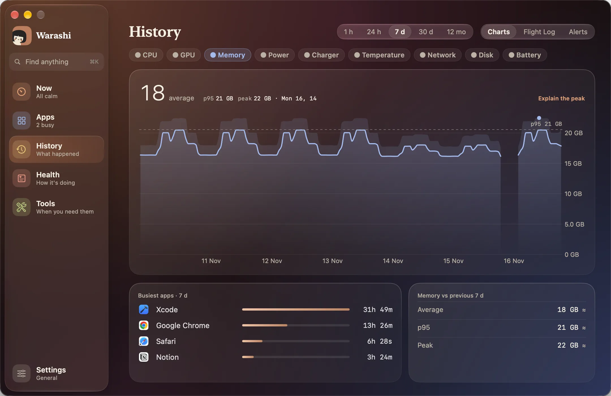

“Di quanta RAM ho bisogno?” è la domanda più comune prima di comprare un Mac, e la più tirata a indovinare. La risposta onesta è: tanta quanta dice la tua pressione della memoria, non quella che dice “Memoria usata”.
Perché “Memoria usata” inganna
Per macOS la memoria inutilizzata è memoria sprecata. La riempie con le cache dei file e tiene compressa la memoria delle app invece di buttarla. Quindi un Mac che mostra 15 GB su 16 “usati” può stare benissimo.
Cosa guardare invece
- Pressione della memoria: verde, giallo o rosso nella scheda Memoria di Monitoraggio Attività. È macOS che ti dice quanto fatica a trovare memoria.
- Swap usato: memoria scritta sul disco. Un po' è normale; gigabyte ogni giorno significano che ne hai poca.
- Compressa: memoria compressa per farla stare. Una compressione alta con pressione in aumento significa che sei vicino al limite.
Regole pratiche
| Cosa vedi in una settimana tipica | Cosa significa |
|---|---|
| Pressione verde, swap vicino a zero | Ne hai abbastanza. Più memoria non lo renderà più veloce. |
| Giallo nei giorni intensi, un po' di swap | Sei al limite. Il prossimo Mac dovrebbe avere una taglia in più. |
| Giallo o rosso quasi sempre, swap in gigabyte | Ti manca. Una o due taglie in più. |
Misura, non tirare a indovinare
Il punto è che serve una settimana o un mese di dati, nei tuoi giorni più intensi, non uno sguardo in un pomeriggio tranquillo. Il Consulente upgrade di Warashi registra ogni giorno pressione della memoria e swap e, dopo 30 giorni, consiglia una dimensione di memoria che Apple vende davvero, con le prove.


Warashi lo fa per te. Registra la cronologia del tuo Mac in background, così puoi guardare cos'è successo invece di provare a coglierlo dal vivo. Può anche avvisarti quando la memoria resta scarsa a lungo. Scarica la beta gratuita →